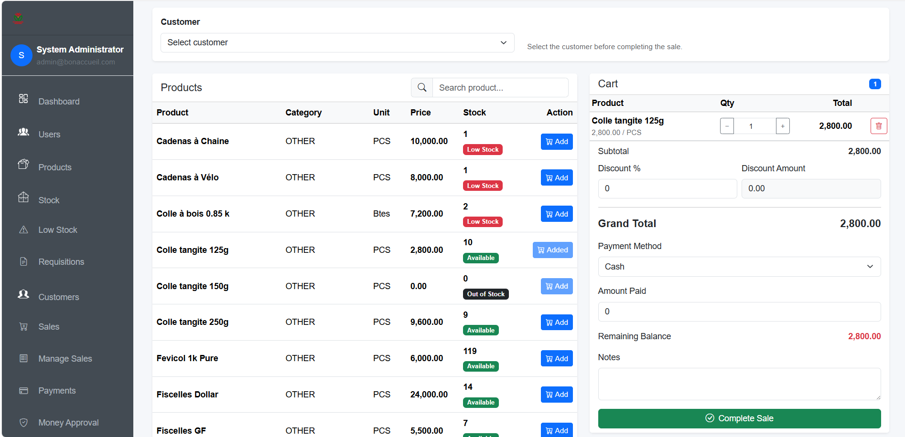
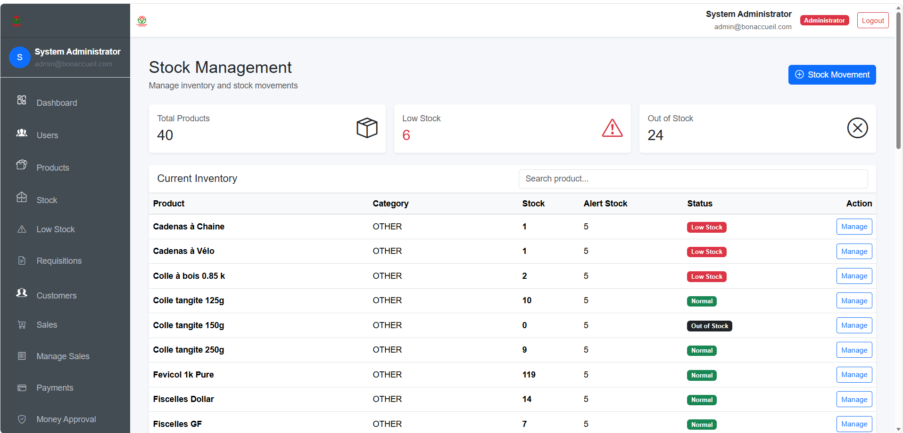
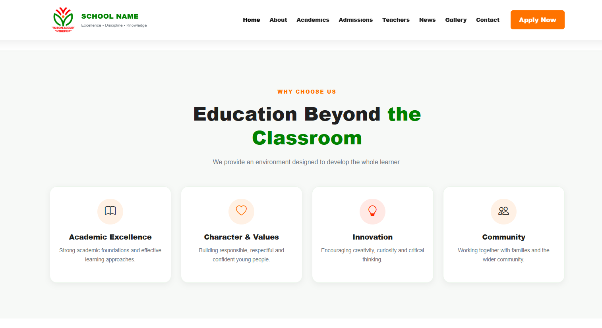
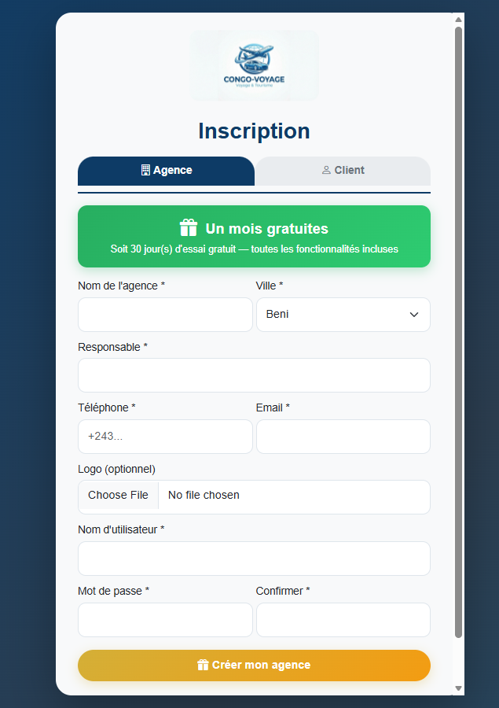

IT Assistant — Adventist University of Central Africa (AUCA)
Assisted with networking courses and practical sessions, demonstrated network configurations to students, and provided support in computer laboratories.
IT • NETWORKS • SOFTWARE DEVELOPMENT
I’m Syatimwa Binlikambo Raphael, an Information Technology professional specialized in Networks and Communication Systems, with hands-on experience in IT support, network administration and software development.
IT support • Network administration • Software development
ABOUT ME
I am passionate about network administration and computer systems. My experience includes supporting academic environments, maintaining and extending local networks, configuring and troubleshooting IT equipment, assisting users, and developing management-oriented software.
I enjoy learning, collaborating with teams and turning technical requirements into solutions that people can actually use.
EXPERIENCE
Assisted with networking courses and practical sessions, demonstrated network configurations to students, and provided support in computer laboratories.
Local network maintenance and extension, installation and configuration of IT equipment, troubleshooting and technical user support.
Contributed to the design and development of management software projects including AfyaSoft, CongoVoyage, AllManager and ShuleOnline.
PROJECTS & CASE STUDIES
Selected software projects from my freelance development work. Each project highlights the problem space, my technical direction and the available live version.
A management application developed around stock, sales and operational workflows.
An education-oriented project connected to the broader Shule initiative and its goal of expanding access to learning opportunities.
A management software project developed as part of my freelance software development work.
A web project focused on presenting travel and tourism information.
WHAT I BRING TO A TEAM
My background combines networking and IT support with software development. That means I can understand both the environment in which an application operates and the software people use inside it.
A visual showcase of selected projects, applications, interfaces and technical work.




TECHNICAL TOOLKIT
Windows Server 2019
Windows 10 & 11
Linux Ubuntu
Cisco Packet Tracer
VirtualBox
LAN / Wi‑Fi configuration
HTML / CSS
Java
C / C++
MySQL
Database fundamentals
Management applications
EDUCATION
Option: Networks and Communication Systems
Adventist University of Central Africa (AUCA)
Option: Industrial Electronics
Institut Technique Lukanga
Networking Fundamentals — Cisco NetAcad
Java — Code with Mosh
C++ — Simplilearn
Remote Fleet
Management — Geotab
LANGUAGES
WHY WORK WITH ME
Networks, operating systems, IT support, web development, Java, C/C++ and databases.
Experience supporting users, computer laboratories, local networks and IT equipment in practical environments.
Academic training combined with online learning in networking, Java, C++ and remote fleet management.
A service-oriented approach that values courtesy, organization, collaboration and shared objectives.
LET’S CONNECT
If you are looking for someone who can contribute across networks, IT support and software development, I’d be glad to discuss the opportunity.